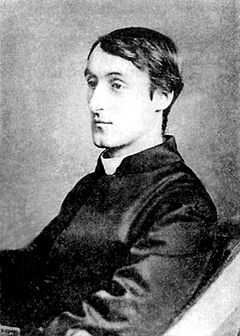

 |
Pied Beauty By Gerard Manley Hopkins |
GLORY be
to God for dappled things—
For skies of couple-colour as a brinded cow;
For rose-moles all in stipple upon trout that swim;
Fresh-firecoal chestnut-falls; finches’ wings;
Landscape plotted and pieced—fold, fallow, and plough;
And áll trádes, their gear and tackle and trim.
All things counter, original, spare, strange;
Whatever is fickle, freckled (who knows how?)
With swift, slow; sweet, sour; adazzle, dim;
He fathers-forth whose beauty is past change:
Praise
him.